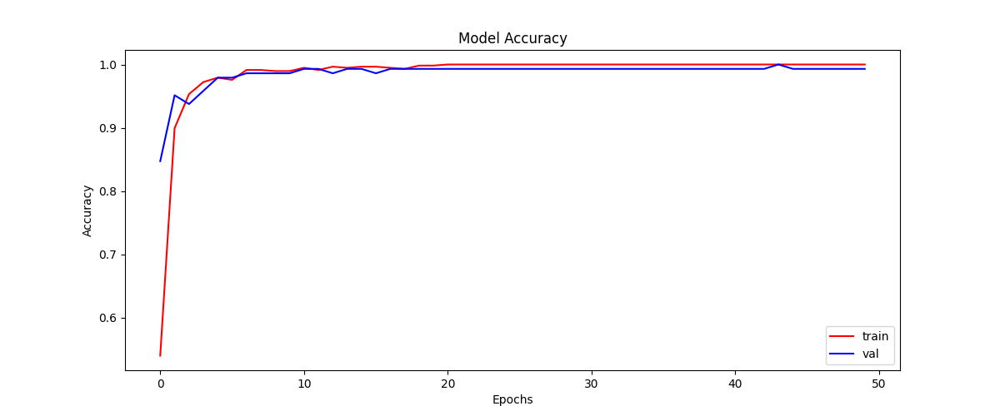
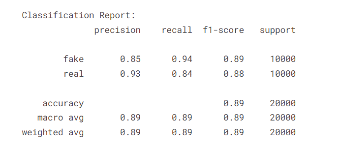
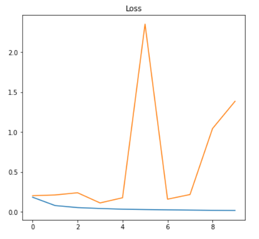
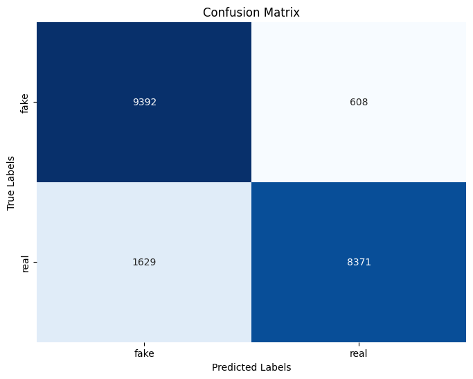
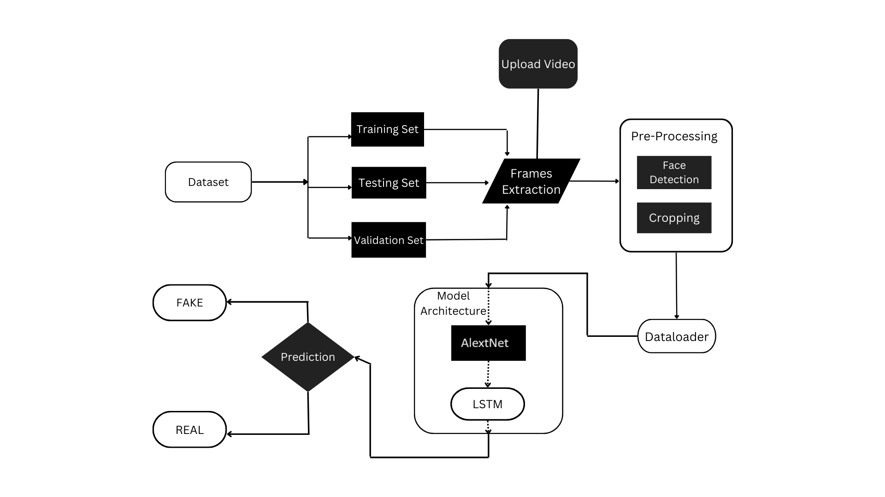

Audio DeepFake Detection
Home
Accuracy
Audio DeepFake Detection using Artificial Intelligence
Accuracy Plot

Precision Recall

Training and Testing Loss Ratio

Confusion Matrix

Overall Architecture of the Project
